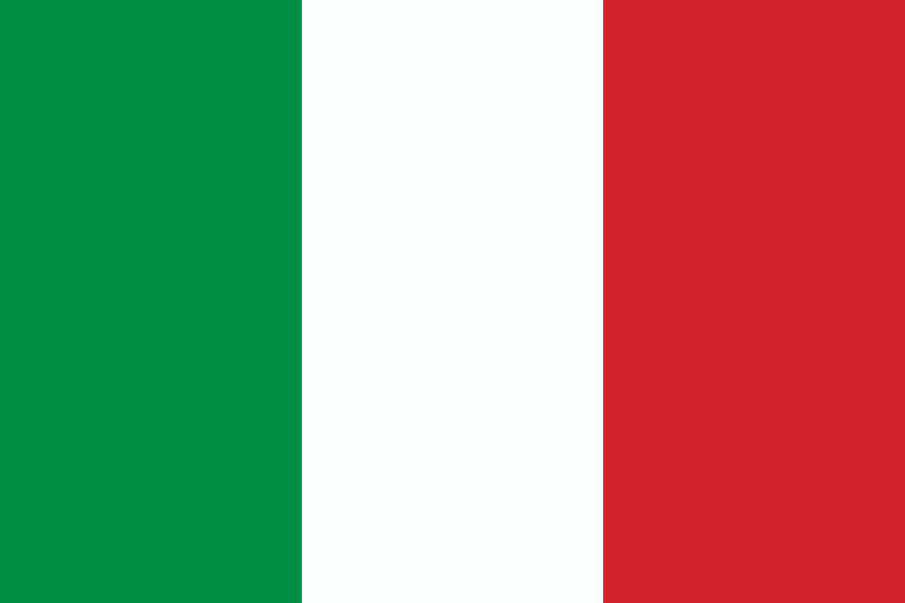
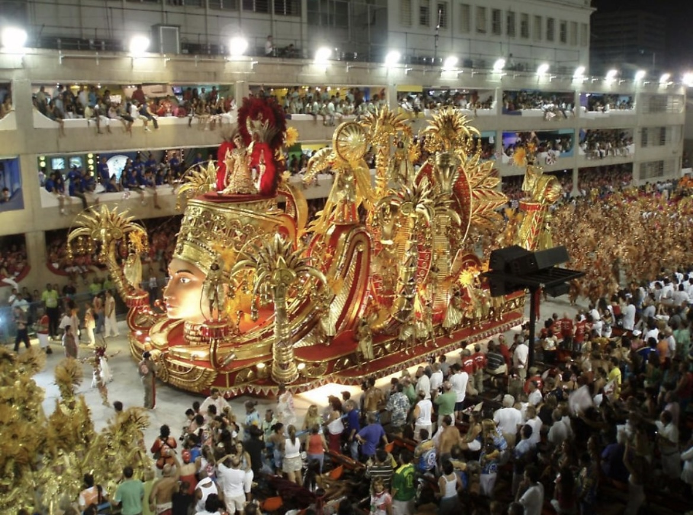
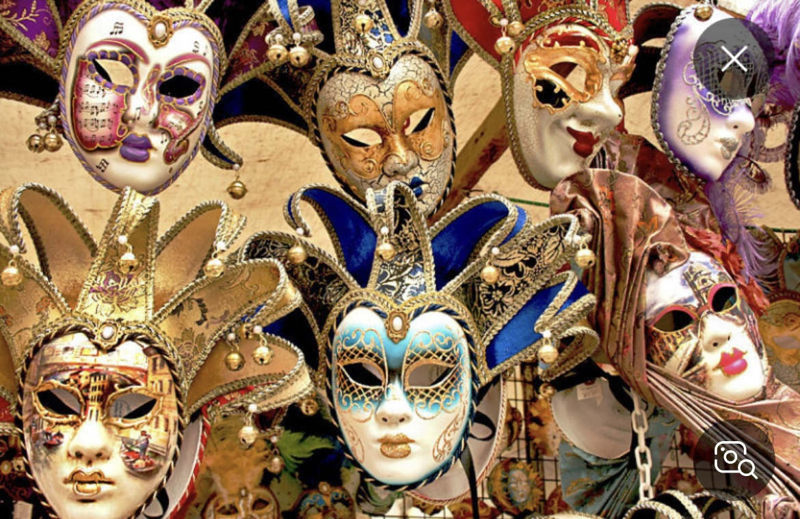
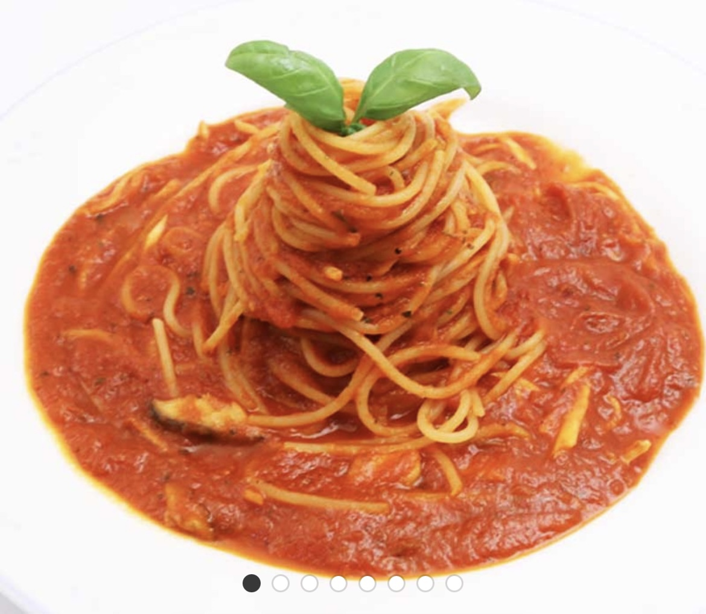
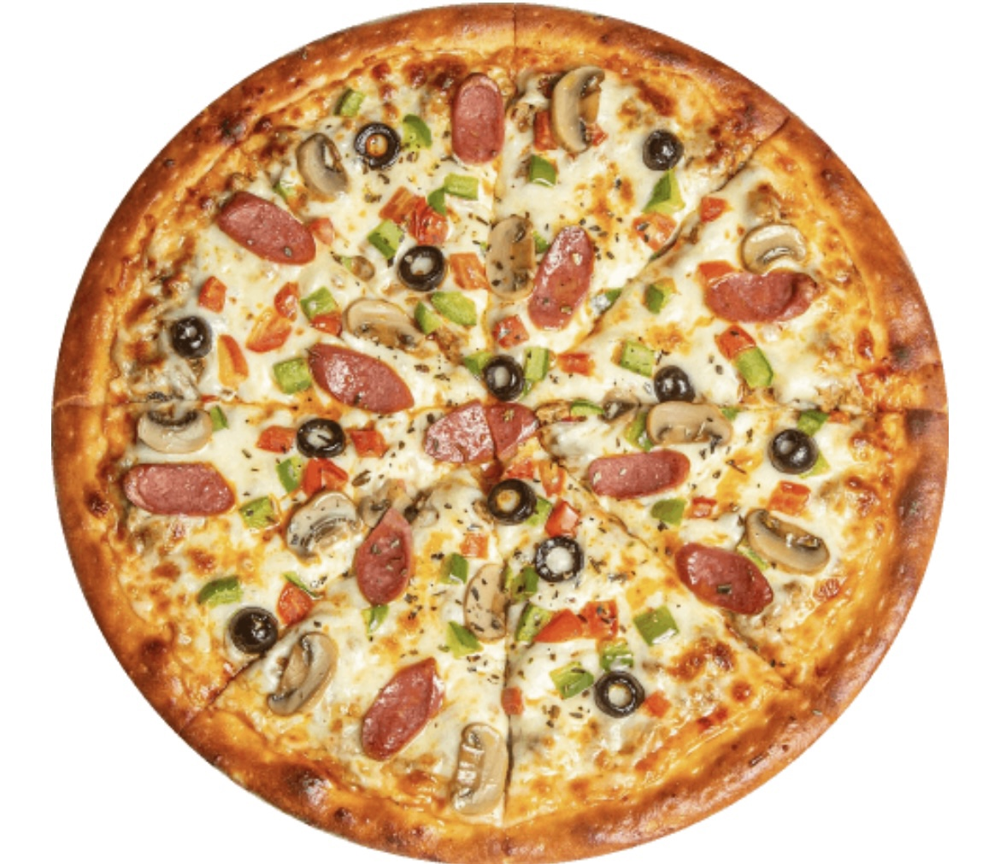
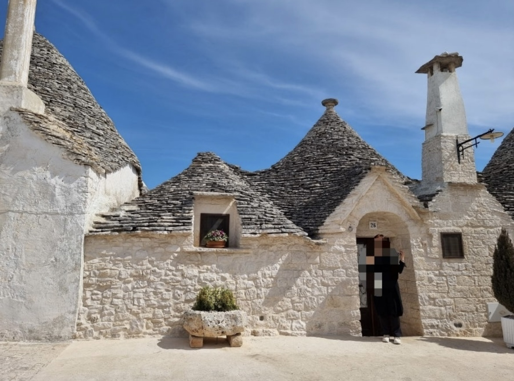
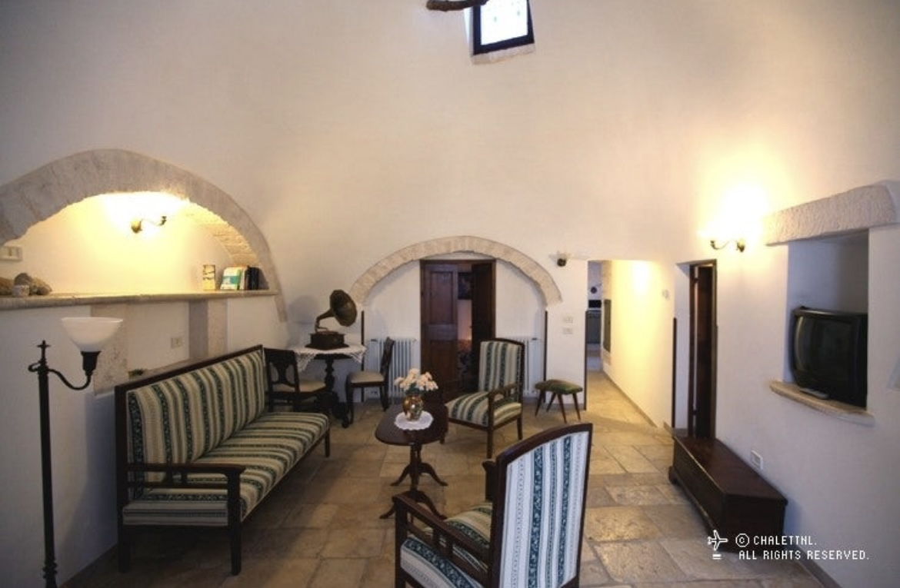

이탈리아 문화 탐험
이탈리아의 멋진 문화를 함께 알아보아요!
2모둠 - 이탈리아
카니발이란?

카니발은 아주 오래전부터 시작된 신나는 축제예요. 옛날 사람들은 특별한
기간 동안 맛있는 음식을 먹지 않고 기도를 해야 했어요. 그래서 그 기간이
시작되기 전에 맛있는 음식도 실컷 먹고 신나게 놀면서 축제를 즐겼답니다.
베네치아의 특별한 가면

베네치아라는 예쁜 도시에서는 축제 때 모든 사람들이 예쁜 가면을 써요.
처음에는 가죽이나 도자기로 간단하게 만들었지만, 지금은 반짝이는 금색과
예쁜 깃털, 보석으로 꾸며서 아주 멋지게 만든답니다.
파스타

긴 국수처럼 생긴 스파게티가 가장 유명해요. 납작하거나 동그란 모양 등
여러 가지 모양의 파스타가 있어서 골라 먹는 재미가 있답니다.
피자

이탈리아는 피자의 고향이에요! 토마토 소스와 치즈, 바질 잎을 올린
마르게리따 피자가 가장 유명하답니다. 다양한 재료를 올려서 만드는 여러
종류의 피자가 있어요.
특별한 집

이탈리아 알베로벨로라는 마을에는 '트룰리'라는 독특한 집들이 있어요.
동그란 벽에 뾰족한 지붕이 있는 모양이 마치 동화 속 집처럼 예쁘답니다.
집 꾸미기

이탈리아 사람들은 집을 예쁘게 꾸미는 것을 좋아해요. 북쪽 지역 사람들은
우아하게, 남쪽 지역 사람들은 밝고 화려하게 집을 꾸민답니다.
재미있는 O/X 퀴즈
1. 카니발은 사순절 전에 열리는 축제인가요?
2. 트룰리는 이탈리아의 전통 음식인가요?
3. 마르게리따 피자는 이탈리아에서 시작되었나요?
4. 베네치아 카니발에서는 가면을 쓰나요?